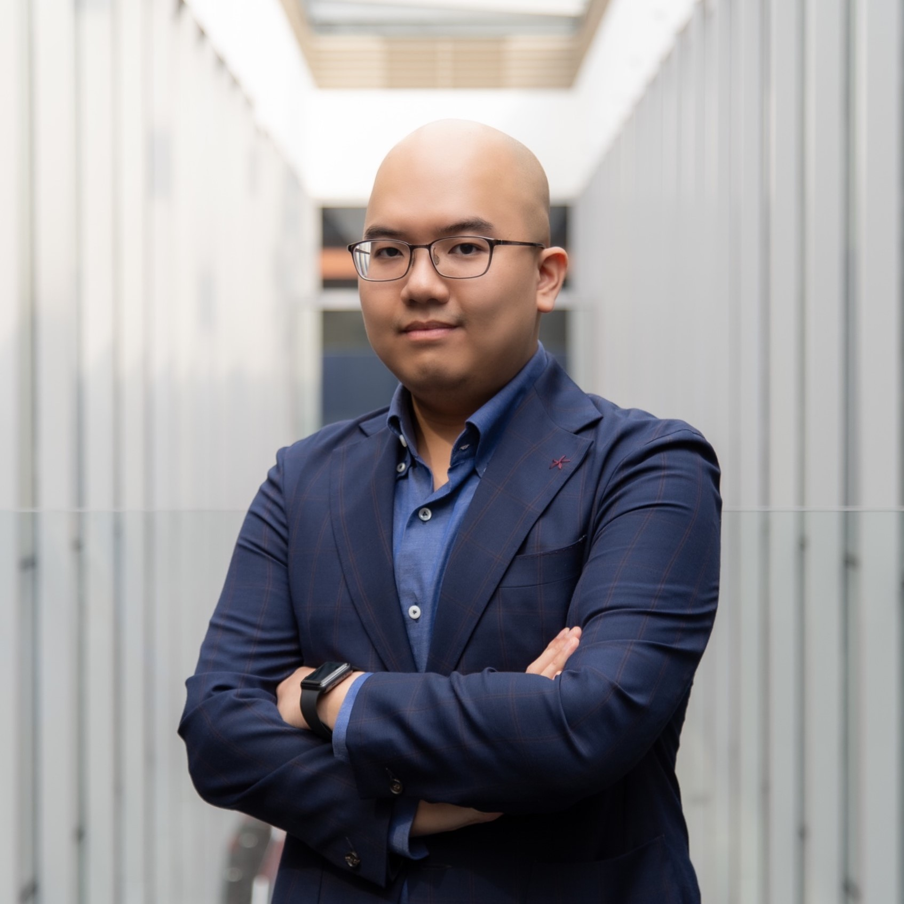

Information Security Management & Digital Business Academic

I am Senior Lecturer (Business Innovation) in the School of Business & Management, RMIT University (Saigon South Campus, Vietnam).
Prior to joining the School of Business & Management, I have been Lecturer (Information Technology) in the School of Science & Technology for three years, where I taught courses in computer science areas such as data science & machine learning, data structures & algorithms, user-centered design, and technology leadership.
During this time, I was also Senior Program Manager for two undergraduate programs, Bachelor of Engineering (Software Engineering) (Honours) and Bachelor of Information Technology. My responsibilities included growing the programs and academic teams, leading initiatives that enhanced research, learning & teaching, and developing strategic relationships with key industry partners in the technology and engineering areas such as Microsoft, IBM, Intel, VNG, ABB, Bosch, and Ericsson.
In 2016, I was awarded the RMIT Prize for Research Impact (Enterprise category), which recognized my active engagement with the industry through conducting research. Since 2018, I have received various research and teaching awards at RMIT University, including the “Living RMIT’s Values” award in 2021 which recognized my contributions to growing the programs while maintaining excellence in research and teaching.
Expertise
I completed my Ph.D. (Business Information Systems) degree at RMIT University (Australia) in May 2018, under the co-supervision of Dr. Siddhi Pittayachawan, Dr. Vince Bruno, and Professor Karlheinz Kautz. For my Ph.D. research, I proposed the use of social network analysis as an analytical and novel method to improve organizational information security, by identifying and leveraging organizational networks and key influencers within the workplace to increase information security awareness. I published 14 research articles on this topic in journals such as Information & Management, Computers in Human Behavior, Computers & Security, and conference proceedings such as ACIS and PACIS, as well as various news articles.
My teaching and research interests focus on the following areas:
- cybersecurity management & behaviors
- digital business & digital transformation
- data analytics for business and education
- human-centered artificial intelligence
My research projects employed both quantitative and qualitative methods, and I am especially interested in social network analysis methods, and action research and design science approaches.
I am supervising several Ph.D. candidates, and I always seek strong candidates who would like to do research in the areas listed above. Please find information about the Ph.D. programs and relevant contacts for further enquiries on this webpage.
Membership
I am the Co-founding Member and Secrectary of the Vietnam Chapter of Association for Information Systems (VAIS). I am a member of the following associations:
- Association for Information Systems (AIS)
- AIS Vietnam Chapter
- Special Interest Group in Information Security and Privacy (SIG SEG)
- Australian Information Security Association (AISA)
I am serving in the editorial boards for the following refereed journals and conference proceedings:
- Australasian Journal of Information Systems (AJIS) (Section Editor & Reviewer)
- Computers & Security (Reviewer)
- Computers in Human Behavior (Reviewer)
- ICIS 2021 (Associate Editor & Reviewer)
- PACIS 2020 (Associate Editor & Reviewer)